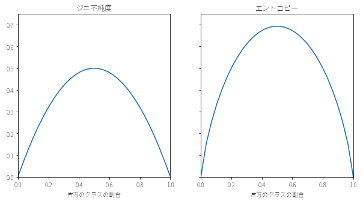

決定木 (decision tree)
Contents
決定木 (decision tree)¶
IF文の連続で結果を予測するモデルである。
精度は低いが、結果に対する説明力 (理由の理解しやすさ) が高い。説明力が重要なプロジェクトでよく用いられる。
説明力が高いため、説明力の低い他のモデル（深層学習など）と併用して使われることがある。
数値データとカテゴリデータが混在していても、使うことができる。
回帰モデルと分類モデルの両方に使うことができる。
元のデータを根 (root) ・分類の最終点を葉 (leaf) ・根から葉に至る途中を枝 (branch) と呼ぶ。
import pandas as pd
from sklearn import tree
import pydotplus
from IPython.display import Image
%matplotlib inline
Duplicate key in file PosixPath('/Library/Frameworks/Python.framework/Versions/3.10/lib/python3.10/site-packages/matplotlib/mpl-data/matplotlibrc'), line 768 ('font.family: IPAexGothic')
PyDotPlusは決定木などの可視化に便利なPythonライブラリである。pydotplus-PyPI
Graphvizと合わせてインストールすることで、可視化が可能になるので、余力のある人は両方インストールした方が良い。Graphviz公式
決定木モデルの例¶
推骨の手術後の猫背の有無（present, absent）を、月齢や関連する推骨の数から予測する、決定木モデルを例として取り上げる。
# データの読み込みと確認
kyphosis = pd.read_csv('./data/kyphosis.csv')
kyphosis.iloc[:, 0] = pd.Categorical(kyphosis.iloc[:, 0])
kyphosis.tail()
| 術後の猫背の有無 | 月齢 | 関係する椎骨の数 | 手術した椎骨の最初の番号 | |
|---|---|---|---|---|
| 76 | present | 157 | 3 | 13 |
| 77 | absent | 26 | 7 | 13 |
| 78 | absent | 120 | 2 | 13 |
| 79 | present | 42 | 7 | 6 |
| 80 | absent | 36 | 4 | 13 |
# 変数の格納
x = kyphosis.iloc[:, 1:]
y = kyphosis['術後の猫背の有無']
feature_names = kyphosis.columns[1:]
class_names = kyphosis['術後の猫背の有無'].cat.categories
# 可視化
model = tree.DecisionTreeClassifier().fit(x, y)
dot = tree.export_graphviz(model, out_file=None, feature_names=feature_names,
class_names=class_names, filled=True, rounded=True,
special_characters=True)
graph = pydotplus.graph_from_dot_data(dot)
image = Image(graph.create_png())
display(image)
分岐の基準（不純度）¶
情報の不純度が最も下がるように、枝が分岐している。
分類の場合、1つのクラスだけで葉が構築されていれば不純度は低く、様々なクラスが混じっていると不純度は高くなる。
不純度の指標としてはジニ不純度やエントロピーが用いられる。
サンプルに含まれるクラスの数を \(c\)、クラス \(i\) に属するサンプルの割合を \(P_i\) とすると、以下のように表すことができる。
ジニ不純度： \({\displaystyle I_{G} =1-\sum ^{c}_{i=1} p^{2}_{i}}\)
エントロピー： \({\displaystyle I_{H} =-\sum ^{c}_{i=1} p_{i} \cdot log( p_{i})}\)

Pythonでの実行方法¶
sklearn.tree.DecisionTreeClassifier を用いる。
# 関数の情報を確認
help(tree.DecisionTreeClassifier)
Help on class DecisionTreeClassifier in module sklearn.tree._classes:
class DecisionTreeClassifier(sklearn.base.ClassifierMixin, BaseDecisionTree)
| DecisionTreeClassifier(*, criterion='gini', splitter='best', max_depth=None, min_samples_split=2, min_samples_leaf=1, min_weight_fraction_leaf=0.0, max_features=None, random_state=None, max_leaf_nodes=None, min_impurity_decrease=0.0, class_weight=None, ccp_alpha=0.0)
|
| A decision tree classifier.
|
| Read more in the :ref:`User Guide <tree>`.
|
| Parameters
| ----------
| criterion : {"gini", "entropy"}, default="gini"
| The function to measure the quality of a split. Supported criteria are
| "gini" for the Gini impurity and "entropy" for the information gain.
|
| splitter : {"best", "random"}, default="best"
| The strategy used to choose the split at each node. Supported
| strategies are "best" to choose the best split and "random" to choose
| the best random split.
|
| max_depth : int, default=None
| The maximum depth of the tree. If None, then nodes are expanded until
| all leaves are pure or until all leaves contain less than
| min_samples_split samples.
|
| min_samples_split : int or float, default=2
| The minimum number of samples required to split an internal node:
|
| - If int, then consider `min_samples_split` as the minimum number.
| - If float, then `min_samples_split` is a fraction and
| `ceil(min_samples_split * n_samples)` are the minimum
| number of samples for each split.
|
| .. versionchanged:: 0.18
| Added float values for fractions.
|
| min_samples_leaf : int or float, default=1
| The minimum number of samples required to be at a leaf node.
| A split point at any depth will only be considered if it leaves at
| least ``min_samples_leaf`` training samples in each of the left and
| right branches. This may have the effect of smoothing the model,
| especially in regression.
|
| - If int, then consider `min_samples_leaf` as the minimum number.
| - If float, then `min_samples_leaf` is a fraction and
| `ceil(min_samples_leaf * n_samples)` are the minimum
| number of samples for each node.
|
| .. versionchanged:: 0.18
| Added float values for fractions.
|
| min_weight_fraction_leaf : float, default=0.0
| The minimum weighted fraction of the sum total of weights (of all
| the input samples) required to be at a leaf node. Samples have
| equal weight when sample_weight is not provided.
|
| max_features : int, float or {"auto", "sqrt", "log2"}, default=None
| The number of features to consider when looking for the best split:
|
| - If int, then consider `max_features` features at each split.
| - If float, then `max_features` is a fraction and
| `int(max_features * n_features)` features are considered at each
| split.
| - If "auto", then `max_features=sqrt(n_features)`.
| - If "sqrt", then `max_features=sqrt(n_features)`.
| - If "log2", then `max_features=log2(n_features)`.
| - If None, then `max_features=n_features`.
|
| Note: the search for a split does not stop until at least one
| valid partition of the node samples is found, even if it requires to
| effectively inspect more than ``max_features`` features.
|
| random_state : int, RandomState instance or None, default=None
| Controls the randomness of the estimator. The features are always
| randomly permuted at each split, even if ``splitter`` is set to
| ``"best"``. When ``max_features < n_features``, the algorithm will
| select ``max_features`` at random at each split before finding the best
| split among them. But the best found split may vary across different
| runs, even if ``max_features=n_features``. That is the case, if the
| improvement of the criterion is identical for several splits and one
| split has to be selected at random. To obtain a deterministic behaviour
| during fitting, ``random_state`` has to be fixed to an integer.
| See :term:`Glossary <random_state>` for details.
|
| max_leaf_nodes : int, default=None
| Grow a tree with ``max_leaf_nodes`` in best-first fashion.
| Best nodes are defined as relative reduction in impurity.
| If None then unlimited number of leaf nodes.
|
| min_impurity_decrease : float, default=0.0
| A node will be split if this split induces a decrease of the impurity
| greater than or equal to this value.
|
| The weighted impurity decrease equation is the following::
|
| N_t / N * (impurity - N_t_R / N_t * right_impurity
| - N_t_L / N_t * left_impurity)
|
| where ``N`` is the total number of samples, ``N_t`` is the number of
| samples at the current node, ``N_t_L`` is the number of samples in the
| left child, and ``N_t_R`` is the number of samples in the right child.
|
| ``N``, ``N_t``, ``N_t_R`` and ``N_t_L`` all refer to the weighted sum,
| if ``sample_weight`` is passed.
|
| .. versionadded:: 0.19
|
| class_weight : dict, list of dict or "balanced", default=None
| Weights associated with classes in the form ``{class_label: weight}``.
| If None, all classes are supposed to have weight one. For
| multi-output problems, a list of dicts can be provided in the same
| order as the columns of y.
|
| Note that for multioutput (including multilabel) weights should be
| defined for each class of every column in its own dict. For example,
| for four-class multilabel classification weights should be
| [{0: 1, 1: 1}, {0: 1, 1: 5}, {0: 1, 1: 1}, {0: 1, 1: 1}] instead of
| [{1:1}, {2:5}, {3:1}, {4:1}].
|
| The "balanced" mode uses the values of y to automatically adjust
| weights inversely proportional to class frequencies in the input data
| as ``n_samples / (n_classes * np.bincount(y))``
|
| For multi-output, the weights of each column of y will be multiplied.
|
| Note that these weights will be multiplied with sample_weight (passed
| through the fit method) if sample_weight is specified.
|
| ccp_alpha : non-negative float, default=0.0
| Complexity parameter used for Minimal Cost-Complexity Pruning. The
| subtree with the largest cost complexity that is smaller than
| ``ccp_alpha`` will be chosen. By default, no pruning is performed. See
| :ref:`minimal_cost_complexity_pruning` for details.
|
| .. versionadded:: 0.22
|
| Attributes
| ----------
| classes_ : ndarray of shape (n_classes,) or list of ndarray
| The classes labels (single output problem),
| or a list of arrays of class labels (multi-output problem).
|
| feature_importances_ : ndarray of shape (n_features,)
| The impurity-based feature importances.
| The higher, the more important the feature.
| The importance of a feature is computed as the (normalized)
| total reduction of the criterion brought by that feature. It is also
| known as the Gini importance [4]_.
|
| Warning: impurity-based feature importances can be misleading for
| high cardinality features (many unique values). See
| :func:`sklearn.inspection.permutation_importance` as an alternative.
|
| max_features_ : int
| The inferred value of max_features.
|
| n_classes_ : int or list of int
| The number of classes (for single output problems),
| or a list containing the number of classes for each
| output (for multi-output problems).
|
| n_features_ : int
| The number of features when ``fit`` is performed.
|
| .. deprecated:: 1.0
| `n_features_` is deprecated in 1.0 and will be removed in
| 1.2. Use `n_features_in_` instead.
|
| n_features_in_ : int
| Number of features seen during :term:`fit`.
|
| .. versionadded:: 0.24
|
| feature_names_in_ : ndarray of shape (`n_features_in_`,)
| Names of features seen during :term:`fit`. Defined only when `X`
| has feature names that are all strings.
|
| .. versionadded:: 1.0
|
| n_outputs_ : int
| The number of outputs when ``fit`` is performed.
|
| tree_ : Tree instance
| The underlying Tree object. Please refer to
| ``help(sklearn.tree._tree.Tree)`` for attributes of Tree object and
| :ref:`sphx_glr_auto_examples_tree_plot_unveil_tree_structure.py`
| for basic usage of these attributes.
|
| See Also
| --------
| DecisionTreeRegressor : A decision tree regressor.
|
| Notes
| -----
| The default values for the parameters controlling the size of the trees
| (e.g. ``max_depth``, ``min_samples_leaf``, etc.) lead to fully grown and
| unpruned trees which can potentially be very large on some data sets. To
| reduce memory consumption, the complexity and size of the trees should be
| controlled by setting those parameter values.
|
| The :meth:`predict` method operates using the :func:`numpy.argmax`
| function on the outputs of :meth:`predict_proba`. This means that in
| case the highest predicted probabilities are tied, the classifier will
| predict the tied class with the lowest index in :term:`classes_`.
|
| References
| ----------
|
| .. [1] https://en.wikipedia.org/wiki/Decision_tree_learning
|
| .. [2] L. Breiman, J. Friedman, R. Olshen, and C. Stone, "Classification
| and Regression Trees", Wadsworth, Belmont, CA, 1984.
|
| .. [3] T. Hastie, R. Tibshirani and J. Friedman. "Elements of Statistical
| Learning", Springer, 2009.
|
| .. [4] L. Breiman, and A. Cutler, "Random Forests",
| https://www.stat.berkeley.edu/~breiman/RandomForests/cc_home.htm
|
| Examples
| --------
| >>> from sklearn.datasets import load_iris
| >>> from sklearn.model_selection import cross_val_score
| >>> from sklearn.tree import DecisionTreeClassifier
| >>> clf = DecisionTreeClassifier(random_state=0)
| >>> iris = load_iris()
| >>> cross_val_score(clf, iris.data, iris.target, cv=10)
| ... # doctest: +SKIP
| ...
| array([ 1. , 0.93..., 0.86..., 0.93..., 0.93...,
| 0.93..., 0.93..., 1. , 0.93..., 1. ])
|
| Method resolution order:
| DecisionTreeClassifier
| sklearn.base.ClassifierMixin
| BaseDecisionTree
| sklearn.base.MultiOutputMixin
| sklearn.base.BaseEstimator
| builtins.object
|
| Methods defined here:
|
| __init__(self, *, criterion='gini', splitter='best', max_depth=None, min_samples_split=2, min_samples_leaf=1, min_weight_fraction_leaf=0.0, max_features=None, random_state=None, max_leaf_nodes=None, min_impurity_decrease=0.0, class_weight=None, ccp_alpha=0.0)
| Initialize self. See help(type(self)) for accurate signature.
|
| fit(self, X, y, sample_weight=None, check_input=True, X_idx_sorted='deprecated')
| Build a decision tree classifier from the training set (X, y).
|
| Parameters
| ----------
| X : {array-like, sparse matrix} of shape (n_samples, n_features)
| The training input samples. Internally, it will be converted to
| ``dtype=np.float32`` and if a sparse matrix is provided
| to a sparse ``csc_matrix``.
|
| y : array-like of shape (n_samples,) or (n_samples, n_outputs)
| The target values (class labels) as integers or strings.
|
| sample_weight : array-like of shape (n_samples,), default=None
| Sample weights. If None, then samples are equally weighted. Splits
| that would create child nodes with net zero or negative weight are
| ignored while searching for a split in each node. Splits are also
| ignored if they would result in any single class carrying a
| negative weight in either child node.
|
| check_input : bool, default=True
| Allow to bypass several input checking.
| Don't use this parameter unless you know what you do.
|
| X_idx_sorted : deprecated, default="deprecated"
| This parameter is deprecated and has no effect.
| It will be removed in 1.1 (renaming of 0.26).
|
| .. deprecated:: 0.24
|
| Returns
| -------
| self : DecisionTreeClassifier
| Fitted estimator.
|
| predict_log_proba(self, X)
| Predict class log-probabilities of the input samples X.
|
| Parameters
| ----------
| X : {array-like, sparse matrix} of shape (n_samples, n_features)
| The input samples. Internally, it will be converted to
| ``dtype=np.float32`` and if a sparse matrix is provided
| to a sparse ``csr_matrix``.
|
| Returns
| -------
| proba : ndarray of shape (n_samples, n_classes) or list of n_outputs such arrays if n_outputs > 1
| The class log-probabilities of the input samples. The order of the
| classes corresponds to that in the attribute :term:`classes_`.
|
| predict_proba(self, X, check_input=True)
| Predict class probabilities of the input samples X.
|
| The predicted class probability is the fraction of samples of the same
| class in a leaf.
|
| Parameters
| ----------
| X : {array-like, sparse matrix} of shape (n_samples, n_features)
| The input samples. Internally, it will be converted to
| ``dtype=np.float32`` and if a sparse matrix is provided
| to a sparse ``csr_matrix``.
|
| check_input : bool, default=True
| Allow to bypass several input checking.
| Don't use this parameter unless you know what you do.
|
| Returns
| -------
| proba : ndarray of shape (n_samples, n_classes) or list of n_outputs such arrays if n_outputs > 1
| The class probabilities of the input samples. The order of the
| classes corresponds to that in the attribute :term:`classes_`.
|
| ----------------------------------------------------------------------
| Readonly properties defined here:
|
| n_features_
| DEPRECATED: The attribute `n_features_` is deprecated in 1.0 and will be removed in 1.2. Use `n_features_in_` instead.
|
| ----------------------------------------------------------------------
| Data and other attributes defined here:
|
| __abstractmethods__ = frozenset()
|
| ----------------------------------------------------------------------
| Methods inherited from sklearn.base.ClassifierMixin:
|
| score(self, X, y, sample_weight=None)
| Return the mean accuracy on the given test data and labels.
|
| In multi-label classification, this is the subset accuracy
| which is a harsh metric since you require for each sample that
| each label set be correctly predicted.
|
| Parameters
| ----------
| X : array-like of shape (n_samples, n_features)
| Test samples.
|
| y : array-like of shape (n_samples,) or (n_samples, n_outputs)
| True labels for `X`.
|
| sample_weight : array-like of shape (n_samples,), default=None
| Sample weights.
|
| Returns
| -------
| score : float
| Mean accuracy of ``self.predict(X)`` wrt. `y`.
|
| ----------------------------------------------------------------------
| Data descriptors inherited from sklearn.base.ClassifierMixin:
|
| __dict__
| dictionary for instance variables (if defined)
|
| __weakref__
| list of weak references to the object (if defined)
|
| ----------------------------------------------------------------------
| Methods inherited from BaseDecisionTree:
|
| apply(self, X, check_input=True)
| Return the index of the leaf that each sample is predicted as.
|
| .. versionadded:: 0.17
|
| Parameters
| ----------
| X : {array-like, sparse matrix} of shape (n_samples, n_features)
| The input samples. Internally, it will be converted to
| ``dtype=np.float32`` and if a sparse matrix is provided
| to a sparse ``csr_matrix``.
|
| check_input : bool, default=True
| Allow to bypass several input checking.
| Don't use this parameter unless you know what you do.
|
| Returns
| -------
| X_leaves : array-like of shape (n_samples,)
| For each datapoint x in X, return the index of the leaf x
| ends up in. Leaves are numbered within
| ``[0; self.tree_.node_count)``, possibly with gaps in the
| numbering.
|
| cost_complexity_pruning_path(self, X, y, sample_weight=None)
| Compute the pruning path during Minimal Cost-Complexity Pruning.
|
| See :ref:`minimal_cost_complexity_pruning` for details on the pruning
| process.
|
| Parameters
| ----------
| X : {array-like, sparse matrix} of shape (n_samples, n_features)
| The training input samples. Internally, it will be converted to
| ``dtype=np.float32`` and if a sparse matrix is provided
| to a sparse ``csc_matrix``.
|
| y : array-like of shape (n_samples,) or (n_samples, n_outputs)
| The target values (class labels) as integers or strings.
|
| sample_weight : array-like of shape (n_samples,), default=None
| Sample weights. If None, then samples are equally weighted. Splits
| that would create child nodes with net zero or negative weight are
| ignored while searching for a split in each node. Splits are also
| ignored if they would result in any single class carrying a
| negative weight in either child node.
|
| Returns
| -------
| ccp_path : :class:`~sklearn.utils.Bunch`
| Dictionary-like object, with the following attributes.
|
| ccp_alphas : ndarray
| Effective alphas of subtree during pruning.
|
| impurities : ndarray
| Sum of the impurities of the subtree leaves for the
| corresponding alpha value in ``ccp_alphas``.
|
| decision_path(self, X, check_input=True)
| Return the decision path in the tree.
|
| .. versionadded:: 0.18
|
| Parameters
| ----------
| X : {array-like, sparse matrix} of shape (n_samples, n_features)
| The input samples. Internally, it will be converted to
| ``dtype=np.float32`` and if a sparse matrix is provided
| to a sparse ``csr_matrix``.
|
| check_input : bool, default=True
| Allow to bypass several input checking.
| Don't use this parameter unless you know what you do.
|
| Returns
| -------
| indicator : sparse matrix of shape (n_samples, n_nodes)
| Return a node indicator CSR matrix where non zero elements
| indicates that the samples goes through the nodes.
|
| get_depth(self)
| Return the depth of the decision tree.
|
| The depth of a tree is the maximum distance between the root
| and any leaf.
|
| Returns
| -------
| self.tree_.max_depth : int
| The maximum depth of the tree.
|
| get_n_leaves(self)
| Return the number of leaves of the decision tree.
|
| Returns
| -------
| self.tree_.n_leaves : int
| Number of leaves.
|
| predict(self, X, check_input=True)
| Predict class or regression value for X.
|
| For a classification model, the predicted class for each sample in X is
| returned. For a regression model, the predicted value based on X is
| returned.
|
| Parameters
| ----------
| X : {array-like, sparse matrix} of shape (n_samples, n_features)
| The input samples. Internally, it will be converted to
| ``dtype=np.float32`` and if a sparse matrix is provided
| to a sparse ``csr_matrix``.
|
| check_input : bool, default=True
| Allow to bypass several input checking.
| Don't use this parameter unless you know what you do.
|
| Returns
| -------
| y : array-like of shape (n_samples,) or (n_samples, n_outputs)
| The predicted classes, or the predict values.
|
| ----------------------------------------------------------------------
| Readonly properties inherited from BaseDecisionTree:
|
| feature_importances_
| Return the feature importances.
|
| The importance of a feature is computed as the (normalized) total
| reduction of the criterion brought by that feature.
| It is also known as the Gini importance.
|
| Warning: impurity-based feature importances can be misleading for
| high cardinality features (many unique values). See
| :func:`sklearn.inspection.permutation_importance` as an alternative.
|
| Returns
| -------
| feature_importances_ : ndarray of shape (n_features,)
| Normalized total reduction of criteria by feature
| (Gini importance).
|
| ----------------------------------------------------------------------
| Methods inherited from sklearn.base.BaseEstimator:
|
| __getstate__(self)
|
| __repr__(self, N_CHAR_MAX=700)
| Return repr(self).
|
| __setstate__(self, state)
|
| get_params(self, deep=True)
| Get parameters for this estimator.
|
| Parameters
| ----------
| deep : bool, default=True
| If True, will return the parameters for this estimator and
| contained subobjects that are estimators.
|
| Returns
| -------
| params : dict
| Parameter names mapped to their values.
|
| set_params(self, **params)
| Set the parameters of this estimator.
|
| The method works on simple estimators as well as on nested objects
| (such as :class:`~sklearn.pipeline.Pipeline`). The latter have
| parameters of the form ``<component>__<parameter>`` so that it's
| possible to update each component of a nested object.
|
| Parameters
| ----------
| **params : dict
| Estimator parameters.
|
| Returns
| -------
| self : estimator instance
| Estimator instance.
# データの読み込みと確認
from sklearn.datasets import load_iris
iris = load_iris()
x, y = iris.data, iris.target
df = pd.DataFrame(x, columns=iris.feature_names)
label = pd.Categorical(y)
label.categories = iris.target_names
df['label'] = label
df.tail()
| sepal length (cm) | sepal width (cm) | petal length (cm) | petal width (cm) | label | |
|---|---|---|---|---|---|
| 145 | 6.7 | 3.0 | 5.2 | 2.3 | virginica |
| 146 | 6.3 | 2.5 | 5.0 | 1.9 | virginica |
| 147 | 6.5 | 3.0 | 5.2 | 2.0 | virginica |
| 148 | 6.2 | 3.4 | 5.4 | 2.3 | virginica |
| 149 | 5.9 | 3.0 | 5.1 | 1.8 | virginica |
# 変数の格納
feature_names = iris.feature_names
class_names = iris.target_names
# モデルの構築
model = tree.DecisionTreeClassifier()
model.fit(x, y)
# 可視化
dot = tree.export_graphviz(model, out_file=None, feature_names=feature_names,
class_names=class_names, filled=True, rounded=True,
special_characters=True)
graph = pydotplus.graph_from_dot_data(dot)
image = Image(graph.create_png())
display(image)
予測¶
新たなデータの予測には predict メソッドを用いる。
# 特徴ラベルの確認
print(feature_names)
['sepal length (cm)', 'sepal width (cm)', 'petal length (cm)', 'petal width (cm)']
# 試しに、sepal length=5.1cm, sepal width=3.5cm, petal length=1.4cm, petal width=0.2cm のデータを入力し、結果を見る。
model.predict([[5.1, 3.5, 1.4, 0.2]])
array([0])
# 出力[0]がどのクラスであったかを確認
class_names[0]
'setosa'